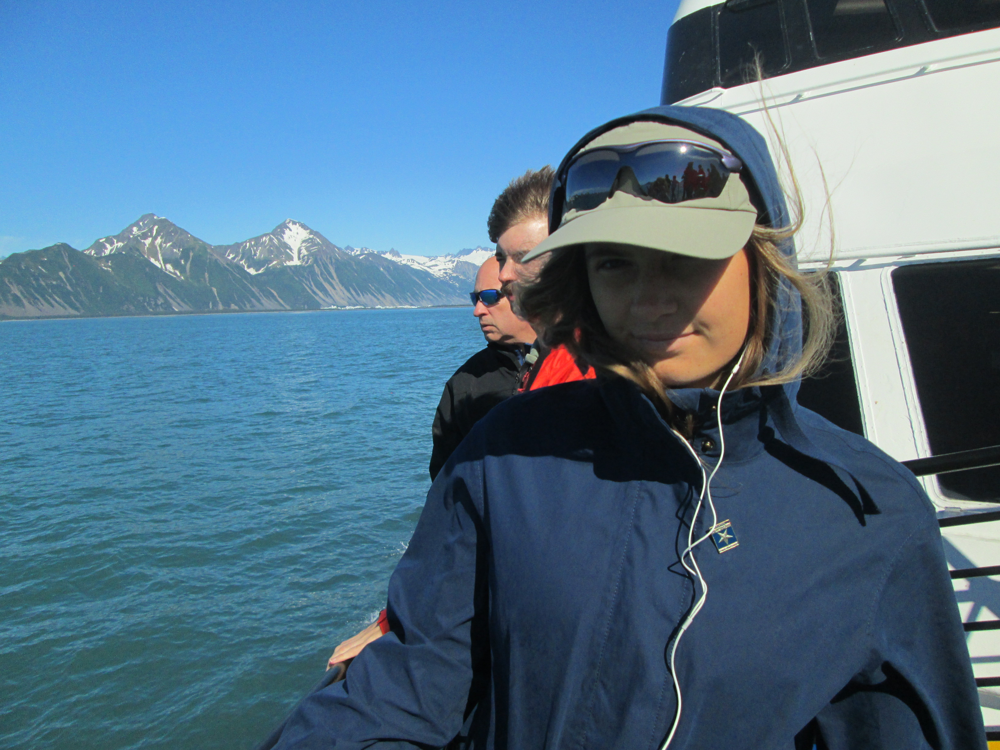

Welcome to the site...
Hello friends, this website is a digital travel log documenting my study abroad adventure in Ireland. This journey will take you the bustling streets of Dublin, the historic town of Kilkenny, the vibrant city of Galway, and the breathtaking Cliffs of Moher. Join me as I explore the rich culture, stunning landscapes, and warm hospitality of the Emerald Isle. Watch the following video to see some moments in Ireland I recorded on my mom's old canon digital.
About Me
My name is Sophie, and I will be your tour guide :D During this spring semester 2024, I've been taking a class through the School of Information at U of M on Web Design and Accessibility. This site is my final project. During regular school semesters I am often coding for backend functionality (CS major!) and not prettiness or accessibility, so this has been a fun change of pace and a cool way to document my experience in Ireland. I hope you enjoy.